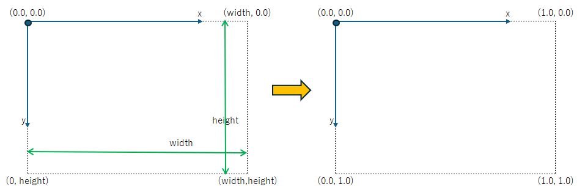

(update:2025/3/22)
座標系を標準化します。
グラフィック画面に図形を描いていると、Gtk::DrawingAreaのWindowのサイズ（幅や高さ）にかかわらずに図形を描画したい場合があります。そのような場合に、Windowのサイズに応じてプログラムを修正するのではなく、Windowの幅や高さに対する割合を指定することにより同様の図形を描くことができます。

scale( width, hieght )を実行するとx軸とy軸の座標が 0.0 ～ 1.0 に標準化されます。
例えばx軸の座標を2倍に拡大すると、同じ位置に表示するためには、座標を２分の１にします。一般に座標軸をN倍に拡大すると、同じ位置に表示するためには座標をN分の１にします。すなわち、点(width, height)について、x座標をwidth倍、y座標をheight倍に拡大したときに同じ位置に表示するためには、(width/width,height/height) = (1.0, 1.0)となります。
| void Cairo::Context::scale( | double | sx, | // x軸方向の拡大係数 |
|---|---|---|---|
| double | sy ) | // y軸方向の拡大係数 |
#include <gtkmm.h>
class Drawing : public Gtk::DrawingArea {
public:
Drawing();
virtual ~Drawing() = default;
private:
double margin = 10.0;
double padding = 10.0;
Glib::ustring name_x ="x";
Glib::ustring name_y ="y";
protected:
void on_draw(const Cairo::RefPtr<Cairo::Context>& cr, int width, int height);
};
Drawing::Drawing()
{
set_draw_func( sigc::mem_fun( *this, &Drawing::on_draw));
}
void Drawing::on_draw(const Cairo::RefPtr<Cairo::Context>& cr, int width, int height) {
// background
cr->set_source_rgba( 1.0, 1.0, 1.0, 1.0 );
cr->paint();
// 座標を標準化
cr->scale( width, height );
// 描画
cr->set_line_width( 0.01 );
cr->set_source_rgba( 0.0, 0.0, 0.0, 1.0 );
for( int i = 0; i < 10; i++ ) {
double x = i * 0.1;
cr->move_to( x, 0.0 ); // Windowの幅・高さに対する比率を指定
cr->line_to( x, 1.0 ); // Windowの幅・高さに対する比率を指定
cr->stroke();
}
for( int i = 0; i < 10; i++ ) {
double y = i * 0.1;
cr->move_to( 0.0, y );
cr->line_to( 1.0, y );
cr->stroke();
}
cr->rectangle( 0.6, 0.1, 0.3, 0.3 ); // Windowの幅・高さに対する比率を指定
cr->set_source_rgb( 1.0, 0.0, 0.0 );
cr->fill();
cr->rectangle( 0.4, 0.7, 0.2, 0.2 ); // Windowの幅・高さに対する比率を指定
cr->set_source_rgb( 0.0, 0.0, 1.0 );
cr->fill();
cr->rectangle( 0.2, 0.3, 0.1, 0.4 );
cr->set_source_rgb( 1.0, 1.0, 0.0 );
cr->fill();
cr->rectangle( 0.1, 0.1, 0.1, 0.4 );
cr->set_source_rgb( 1.0, 1.0, 0.0 );
cr->fill();
}
class MyWindow : public Gtk::Window
{
public:
MyWindow();
protected:
Drawing my_draw;
};
MyWindow::MyWindow()
{
set_title( "scale normalize" );
set_default_size( 320, 240 );
set_child( my_draw );
}
int main(int argc, char* argv[]) {
auto app = Gtk::Application::create( "gtkmm4.example" );
return app->make_window_and_run<MyWindow>( argc, argv );
}